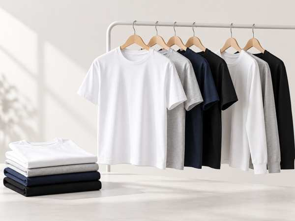
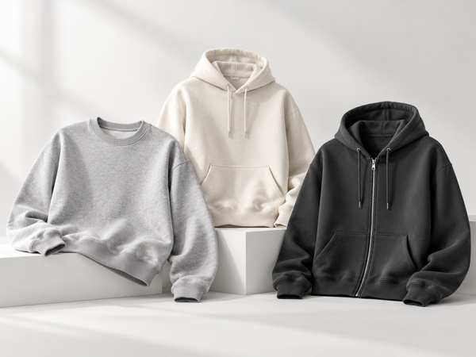
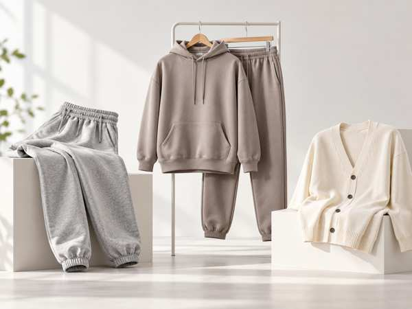
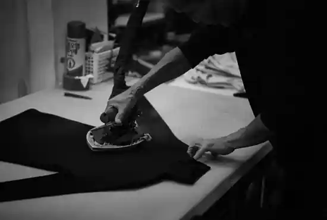
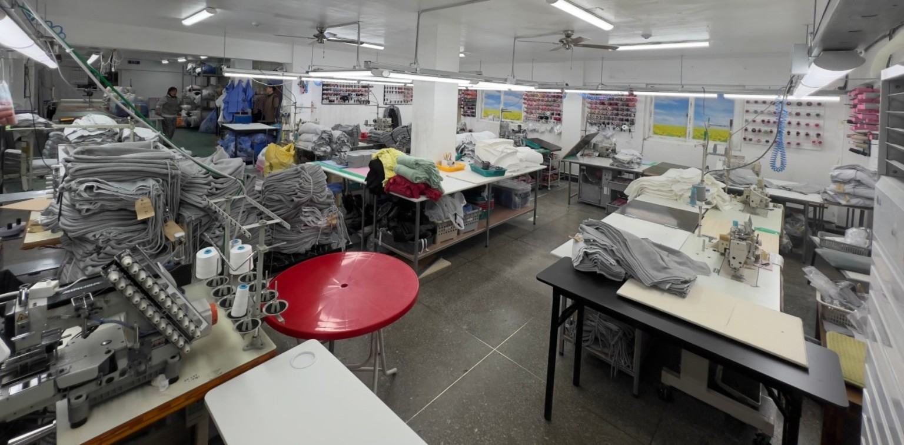

티셔츠
반팔 · 긴팔 티셔츠
서울 용두동 · 36년 현장 경험 · CAD 패턴·우투 디토
브랜드의 가치를 봉제 기술로 완성합니다. 티셔츠·후드·조거팬츠 등 성인 다이마루 의류 제작과 브랜드 프로모션 작업을 상담합니다.
36년의 현장 경험을 바탕으로 브랜드의 생산 기준과 품질을 함께 고민하는 서울 동대문구 다이마루 전문 봉제공장, 지음입니다.
프로모션 의뢰 작업 진행브랜드 행사·캠페인용 의류 제작 상담
제작 문의하기 ↗전화 상담 02-2235-2189브랜드 협업 소개제작 견적 문의서 ↗지음은 다이마루 의류 봉제에 집중해 온 전문 생산업체입니다. 현재 여러 의류 브랜드와 거래하며 디자인별 봉제 사양과 납품 품질을 중요하게 생각합니다.
서울패션허브 ‘의류제조마스터 300’ 선정 업체

반팔 · 긴팔 티셔츠

맨투맨 · 후드티 · 후드집업

조거팬츠 · 트레이닝복 · 가디건
브랜드 행사·캠페인·프로모션용 의류 제작과 봉제 의뢰 작업을 진행합니다. 디자인·수량·일정에 따른 세부 제작 조건은 상담을 통해 협의합니다.
구체적인 생산 가능 사양과 일정은 상담을 통해 확인해 주세요.
지음은 서울특별시 동대문구 천호대로 48, 2층에 있는 다이마루 전문 봉제공장입니다. 티셔츠·맨투맨·후드·집업·조거팬츠 등 성인 의류 봉제, CAD 패턴 작업과 우투 디토를 통한 패턴 업무를 상담합니다.
재단·미싱 봉제·다림질 장면을 직접 촬영한 사진으로 생산 환경을 보여드립니다.
현장 사진 확인 ↗소량·대량·프로모션 의뢰 모두 품목과 수량, 원단·패턴 상태에 따라 진행 여부를 협의합니다.
제작 안내 확인 ↗서울 동대문구 용두동 천호대로 48, 2층 · 대표전화 02-2235-2189
네이버 지도 보기 ↗다이마루 봉제 생산부터 CAD 패턴·우투 디토, 프로모션 의뢰까지 각 서비스의 진행 방식과 공장 현장을 확인하세요.
지음에서 직접 촬영한 실제 의류 작업 사진입니다. 재단부터 봉제·다림질까지 현장 공정을 확인하세요.


지음은 의류 제작의 기초가 되는 패턴 작업을 중요하게 생각합니다. CAD 기반 패턴 작업과 함께 우투 디토(UTTU DITTO)를 도입하여 디지털 패턴 업무 환경을 강화하고 있습니다.
패턴 · 제작 문의하기 ↗지음은 여러 의류 브랜드와 협업하며 다이마루 의류 봉제 및 생산 작업을 진행하고 있습니다. 브랜드별 디자인·봉제 사양과 품질 기준을 존중하며, 협력사의 정보와 작업 내용은 소중하게 관리합니다.
브랜드 생산 협업 문의 ↗지음 JIEUM
서울특별시 동대문구 천호대로 48, 2층
전화: 02-2235-2189